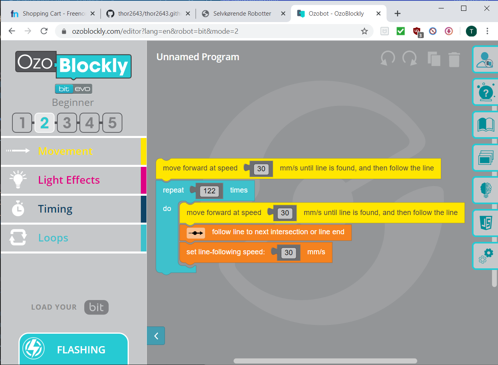

I det her forløb har vi diskuteret om de problemstillinger, der er med selvkørende biler. Vi har blandt andet diskuteret hvem der står til anvar for en eventuel ulykke. Udover det har vi leget med ozobotter, som er små robotter der kan følge en tegnet linje. Til at programmere ozobotterne har vi brugt blokprogrammerings- programmet ozoblockly -->
